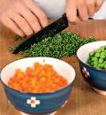
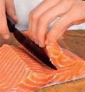
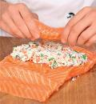
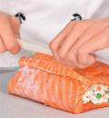

большие филе лосося, по 450 г каждое – 2 шт. филе камбалы – 350 г свежезамороженный зеленый горошек – 300 г свежий белый хлеб без корки – 250 г молоко – 100 мл белок – 1 шт. морковь – 1 шт. веточки петрушки – 2 шт. щепотка мускатного ореха оливковое масло соль, перец
Шаг 1
Морковь очистить и отварить в кипящей подсоленной воде, 10 мин. Дать остыть и нарезать кубиками величиной с горошину. В отдельной кастрюле отварить в кипящей воде зеленый горошек, 6 мин. Отбросить на дуршлаг. Петрушку вымыть, обсушить и разобрать на листики. Мелко их нарезать.
 Шаг 2Хлеб размочить в молоке. Филе камбалы измельчить блендером в пюре. Добавить размоченный и слегка отжатый хлеб, белок, мускатный орех, соль и перец. Перемешать до однородности. Положить морковку, зеленый горошек и петрушку. Еще раз аккуратно перемешать, поставить в холодильник.
Шаг 3Срезать с утолщенной части одного филе продольный кусок шириной примерно 3 см так, чтобы спинка и брюшко получились одинаковой толщины.
 Шаг 4На втором филе сделать на утолщенной части вправо и влево глубокий продольный надрез, не доходя до края 1,5 см. Раскрыть эту часть, как показано на фото. В результате должно получиться три куска – один большой, второй поменьше и третий в виде толстого бруска.
Шаг 5Выложить по центру большого куска половину приготовленной начинки, оставив с каждой стороны по 5 см свободными. Поместить на начинку брусок.
 Шаг 6Сверху распределить оставшуюся начинку, накрыть меньшим куском рыбы. Приподнять свободные края нижнего филе и закрепить их деревянными зубочистками. Смазать рулет маслом, завернуть в фольгу и поставить в разогретую до 200 °С духовку на 35 мин. Дать остыть до комнатной температуры, затем переставить в холодильник. Перед подачей снять фольгу, удалить зубочистки и нарезать рулет порционными кусками.
